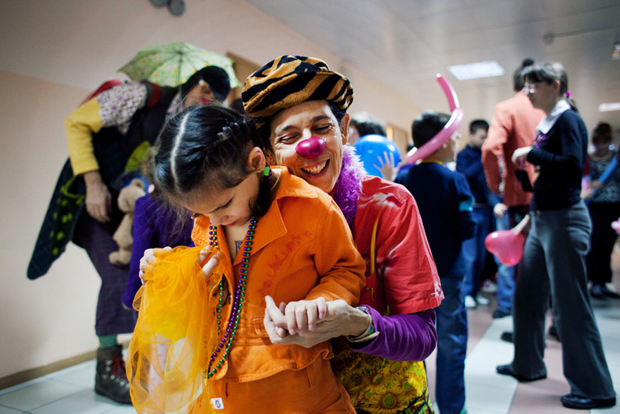
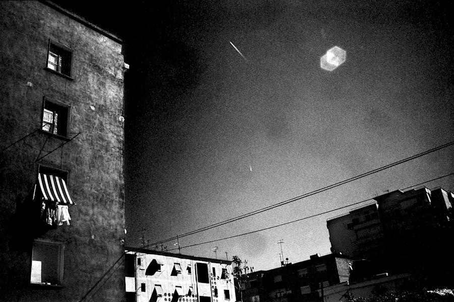
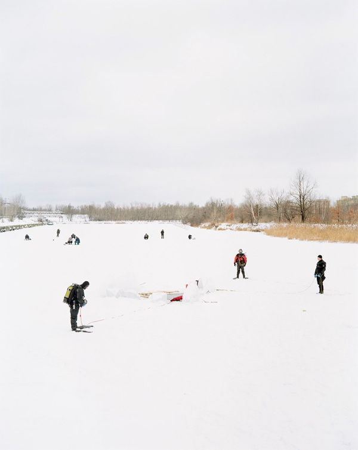
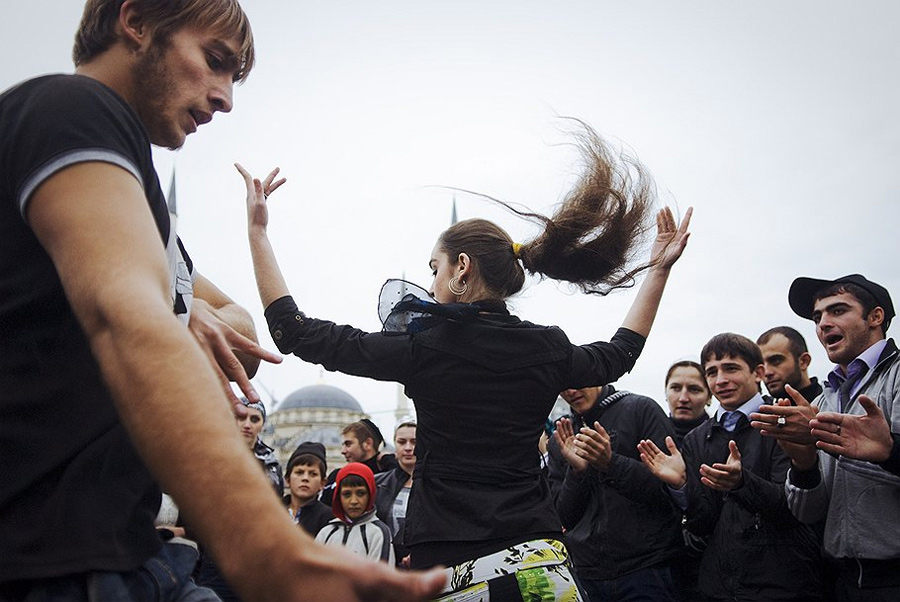
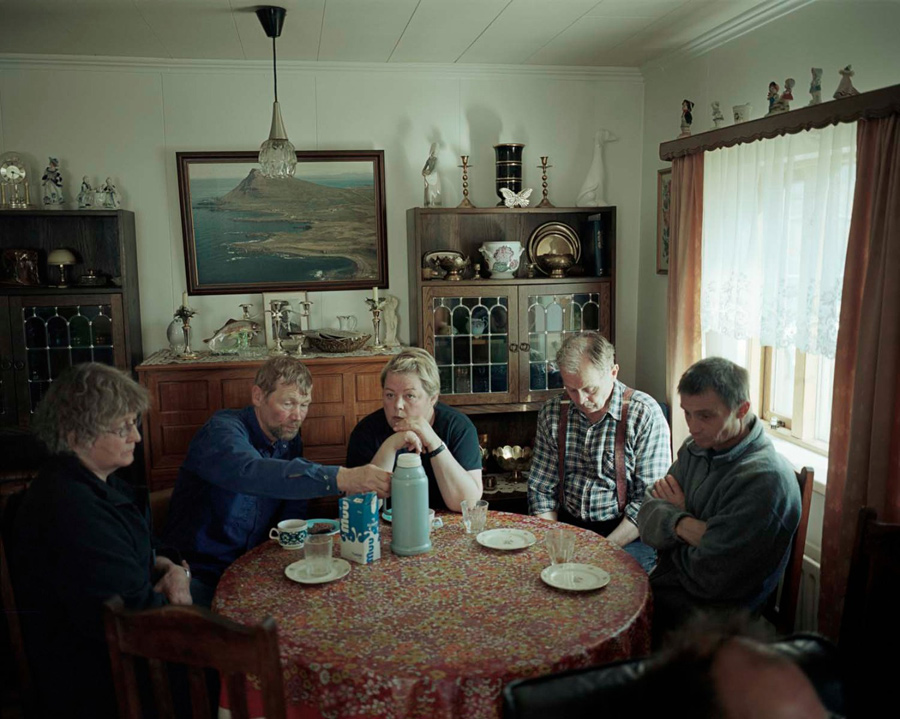
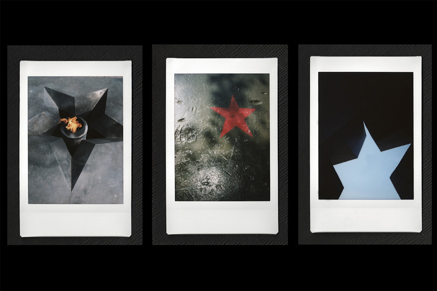

Статьи на разных языках, посвящённые динамике фотоколлективов, изобилуют оптимизмом, и лозунги о «спасении фотожурналистики», «единении» и «чертовском будущем» уже не кажутся красивыми метафорами. Заглядывая на кухню неформальных объединений Verso Images, Sputnikphotos, Miraprospekt и 4plus и беседуя с их представителями, мы пытаемся понять не только причины популярности групповой работы, но и её преимущества по сравнению с традиционным подходом в работе фотожурналиста, которая всегда считалась профессией для одиночек.
Последние годы растущее число фотоколлективов стало логичным ответом на изменения мирового визуального рынка. Идея работы в рамках индивидуального долговременного проекта уступила место рекламной формулировке “get together and make it something bigger”. Сегодня именно эти неформальные группы с дружеским распределением обязанностей, вечно собранным чемоданом и с манифестами, скреплёнными вместо печати круглым следом от чашки кофе[6], активно участвуют и побеждают в престижных конкурсах по всему миру.
Зачем фотографам объединяться
Первый вопрос, который закономерно возникает, когда начинаешь размышлять о фотоколлективах — это, несомненно, вопрос о мотивации. Работу фотографа нередко определяют как «подход одинокого волка» или «работу для одиночек»[1,2]. Почему же тогда врождённые сталкеры вдруг решают, вопреки честолюбию и красоте личной подписи под снимками, объединиться и начать снимать на благо группы?
На самом деле, редкий коллектив открыто признается в том, что они объединились исключительно из-за денег или увеличения шанса получить грант. Большинство подчёркивают исключительно психологические плюсы работы в группе. Вместе не только легче прийти к общему знаменателю в принятии решений, но и проще распределить обязанности: в написании пресс-релизов, съёмках, работе над мультимедиа, звуком, постпродакшном. Некоторые коллективы с течением времени могут трансформироваться в серьёзные фотоагентства: начать принимать заказы отдельных клиентов и организаций, оказывать услуги образовательного характера. В современном мире такая форма существования наиболее рыночно-устойчива, так как проект, включающий фото, видео, звук, инсталляции, а часто и дискуссии с аудиторией во время выставок и презентацией, в большей степени конкурентоспособен и интересен широкому кругу людей.
В интервью фотограф Ольга Кравец — одна из бывших участниц объединения Verso Images — приводит простую, но весьма впечатляющую математику:
«Работа над проектом «Грозный 9 городов» заняла 4 года. Результатами стали 20-минутный фильм, который является основой, и огромный веб-документари. В него входят 600 фотографий, не считая видео. Также есть передвижная выставка: 103 фотографии и инсталляции на 3 экранах. В общей сложности можно говорить о примерно 700 снимках, которые видит публика.
Для меня фотоколлектив — это скорее масштаб работы, которую ты делаешь. Я вполне готова предположить, что если бы над проектом вместо 3 человек работал один, то проект мог бы охватить лет двадцать…».
Мультимедиа "Грозный: 9 городов". Коллектив Verso Images (Мария Морина, Ольга Кравец, Оксана Юшко)
Оксана Юшко — ещё один фотограф, которая принимала участие в создании чеченской истории. Вложив силы в проект «Грозный 9 городов», живущий уже скорее жизнью путешествующей выставки, сегодня Оксана успешно сотрудничает с Артуром Бондарем. Среди достижений пары такие проекты, как «Палата номер смех» и «Линии души».
Оксана рассказывает: «Есть несколько причин для объединения. Это могут быть проекты, основанные на личных эмоциях и переживаниях, полученных совместно, когда фотографы становятся невольными участниками проекта. Могут быть важные исторические события, которые объединяют авторов для совместных проектов и выставок. В данном случае самое важное — стараться показать правду, все стороны конфликта, разные мнения. Тогда проект становится суммой составляющих таких мнений, что приводит одновременно к большей объективности и образности. В настоящее время значение приобретает не сама фотография, а причина: зачем мы это делаем, зачем снимаем. В таком случае проекты, объединённые одной целью, темой, объектом съёмки имеют больший вес. Проект — всегда высказывание, а когда на одну тему высказываются много людей, это превращается в дискуссию».

Фотография из проекта «Палата номер смех», коллектив Оксаны Юшко и Артура Бондаря
Беларуский фотограф Андрей Ленкевич — член польского коллектива Sputnikphotos — также видит плюс визуального высказывания группы прежде всего в его разносторонности: «Если 6-10 человек высказываются на одну фотографическую тему, то получается разностороннее высказывание. Субъективное, но разностороннее. Это попытка рассказать, что же на самом деле происходит в той или иной сфере, стране или месте. Потому что одному человеку это сделать практически невозможно. С другой стороны, когда вас десять, высказывание набирает глубину и силу. Не всегда, может быть, глубину, но то, что оно становится масштабным, это правда».
Возвращаясь к очевидным преимуществам коллективной работы, Андрей подчёркивает (и в этом его мнение сходно с математикой Ольги Кравец):
«Когда вас десять, книжку намного легче сделать, выставку. Время сжимается. Это значит, что десять человек производят больше продукта». Приводя примеры работы в Sputnikphotos, он обобщает достижения коллектива: «После десяти лет работы уже есть 6 книг, 4 выставки, которые побывали на море фестивалей».
Фотоколлективы значительно отличаются друг от друга по масштабуМногонациональные группы вроде NOOR или VII и творческие пары вроде успешного в последние годы украинского дуэта Synchrodogs и заявленным задачам. Иногда фотографы объединяются для создания только одного проекта, чтобы после завершения вернуться к своей основной работе. Причины создания такого временного коллектива обусловлены скорее не философией или общими целями, а простой прагматикой разделения финансовых расходов на путешествие и проживание. Дополнительным плюсом в подобном сотрудничестве является возможность общаться с коллегами на месте съёмки, получая критику и советы.
Например, серия “Shitet” («На продажу») французского фотографа Жиля Рудье в этом году вывела автора в престижный список “Ones to Watch”, ежегодно составляемый British Journal of Photography. Серия была создана Жилем как часть трёхгодичного проекта «Албания», над которым трудились шесть фотографов коллектива Miraprospekt.

Фотография из проекта "Shitet", Gilles Roudiere
«Мы познакомились в Берлине, — рассказывает в skype-интервью Жиль Рудье, — и у нас были очень разные стили съёмки. Проект финансировался из нашего кармана, расходы делили на всех. Вообще, на первом этапе идея делать проект вместе часто связана с тем, чтобы просто весело проводить время, получать друг от друга ободрение и стимулы. Но в результате этого взаимодействия каждый из 6 участников побывал в Албании не менее 3 раз и разработал и реализовал собственный проект видения этой страны».
Для Miraprospekt финальной точкой проекта стала выставка во французском городе Вандом в рамках фестиваля Promenades Photographiques. «Мы не были заинтересованы в дальнейшей совместной работе, — говорит Жиль Рудье, — но каждый из нас мог и дальше использовать снятые серии как часть портфолио или персональных выставок».
Подобное кратковременное сотрудничество является весьма распространённым в Европе. Тот же Жиль, после завершения проекта «Албания», в 2013 году отправился с двумя другими фотографами в Стамбул. «Три недели мы работали в похожем режиме. Результатом должны быть книга и групповая выставка, но, возможно, придётся совершить ещё одну поездку этой осенью», — рассказывает Жиль Рудье.
Сложности коллективной работы
Трудности, с которыми сталкиваются фотографы, приняв решение работать вместе, немногочисленны, но всё же имеют место. Одни — общие для профессионалов в области фотографии, другие — специфичны. К общим трудностям относится отсутствие механизма финансовой поддержки, о чём упоминает в беседе Ольга Кравец:
«Проекты типа «Грозный 9 городов» очень затратные, а финансовой поддержки — ноль. В нашей стране не существует механизма для поддержки молодых фотографов. Если ты молодой финский фотограф, который только что закончил институт с хорошим выпускным проектом, то шанс получить грант от Министерства культуры не менее 80%. Если ты начинающий российский фотограф, то ты вынужден конкурировать за существующие на рынке крупные гранты со всеми известными фотографами, которые с большей вероятностью эти гранты получат. Раньше были лазейки: когда Россия входила в число развивающихся стран, для начинающих фотографов были предусмотрены специальные гранты. Потом этой возможности не стало.
Многое могло бы случиться (и не только с Verso, но со многими талантливыми людьми), если бы была поддержка. А так нужно и себя кормить, и проект снимать…».
Специфической сложностью или скорее логичной особенностью работы в команде является необходимость взаимодействовать с людьми, чьё мнение, видение фотографии или стиль работы могут оказаться совершенно и неожиданно отличающимися от твоего собственного. Как отмечают армянские коллеги из коллектива 4plus:
«Основная трудность, с которой мы сталкивались или сталкиваемся до сих пор, это то, что мы — фотографы, но нам приходится делать много организационной работы: переписки, ответственность за процесс происходящего воркшопа, организация выставки и т.д. Сложность групповой работы в том, что мы разные и иногда наши мнения расходятся. Но когда готовимся к мероприятию, мы забываем обо всём и делаем, как надо».
Оксана Юшко высказывает сходную точку зрения, переводя негативное понятие «трудностей» в более нейтральное. Она рассматривает любое событие как опыт, который стоит оценивать в качестве движущей силы и вектора развития коллектива:
«В двух словах про трудности не скажешь… Это совмещение стилей, мнений, финальный отбор. Но это даже не трудности, а именно опыт, когда путём дискуссий, поиска наилучшего результата, отказа от собственных амбиций шаг за шагом достигается именно тот эффект, ради которого и стоит всё начинать».
Пожалуй, главным здесь является как раз он — «именно тот эффект» или, как его называет Андрей Ленкевич, — «мегаидея», мощная магия совокупного желания и готовности работать вместе, вместе идти к реализации общей цели.

Фотография из проекта "Distant Place", Rafal Milah (коллектив Sputnikphotos)
Мы видим фотографию по-разному, мы любим разную фотографию, — рассказывает Андрей, — но у нас странным образом складывается понимание, куда нужно двигаться и как разговаривать, взаимодействовать. Эти главные ориентиры по поводу фотографии и того, что мы делаем, у всех нас, определённо, сходятся.
В то же время мы развиваемся, ведь каждый проект даёт толчок к индивидуальному развитию собственной темы. Например, мы работаем в рамках проекта полгода или год. А потом многие продолжают эту тему, не могут остановиться. И получаются отдельные книжки. Скажем, в проекте “U”, посвящённом Украине, отдельные книги родились у Рафала Милаха и Яна Брыкчинского.
Могу совершенно точно сказать, что от проекта к проекту мы меняемся, но идём в общем направлении. В таком тоннеле, где можно от стенки к стенке передвигаться, но направление одно».
Об этом же говорит и Стэнли Грин, один из основателей, пожалуй, самого динамичного сегодня европейского фотоколлектива NOOR, который сфокусирован на создании социально острых визуальных проектов, способных стимулировать масштабные общественные изменения. В интервью The New York Times он советует молодым коллективам:
«Нам всем нужно найти способ быть более человечными по отношению друг к другу, более «настроенными» на волну потребностей и желаний других. Если молодые коллективы собираются трудиться вместе, им нужно непременно найти способ организовать общение, которому будет свойственна не просто вовлечённость в общее дело. Речь здесь идёт даже о чём-то большем, нежели сообщество единомышленников» [1].
Коммуникативные сложности рискуют стать острее, если фотографы одного коллектива географически находятся в разных городах или странах. Девушкам из армянского коллектива 4plus удаётся преодолевать проблему отдаленности, используя интернет-платформы, которые позволяют работать с материалами совместно в режиме онлайн (Skype, Dropbox). Но география может стать причиной отказа от участия в работе фотоколлектива. Как признаётся Андрей Ленкевич, часто выходит так, что основную нагрузку берут на себя фотографы (своеобразное «ядро группы»), живущие в непосредственной близости друг от друга — в городе, где расположен офис коллектива.
Фотоколлектив как съёмочная группа
Выясняя то, как работает механизм фотоколлектива, что происходит за кулисами выставки или между строк очередной опубликованной книги, можно прийти к выводу, что групповая работа — это действительно не только тот список авторов, чьи фотографии зритель видит, прогуливаясь по павильонам. Это гораздо больше, чем сообщество. Фотограф Ольга Кравец приводит для описания опыта сотрудничества с Verso Images метафору команды, которая занимается производством фильма:
«Нам, наверное, повезло, что мы изначально договорились работать как некая команда, похожая на команду фильма. При необходимости обязанности разделяются и амбиций вроде “вот эта фотография моя, с моей подписью, а эта твоя” у нас не было. Понятно, что куратор проекта «Грозный 9 городов» Анна Шпакова при сборе выставки прекрасно знает, где чья работа, но никогда не стоит вопрос: если 90 работ, то 30 должны быть одного человека, 30 — другого, 30 — третьего. Мы знаем, что работаем на продукт. И продукт представляет каждого из нас гораздо лучше, чем если бы это был неполный продукт одного человека.

Фотография из проекта «Грозный 9 городов», Оксана Юшко (коллектив Verso Images)
У нас никогда не было менеджера. Куратор, о котором я говорю, появился через год после начала проекта, потому что у нас было очень много материала, снятого тремя очень разными людьми, и этот материал нуждался в организации. Функции куратора заключались в оказании помощи в организации выставки: в отборе материала, архитектуре выставочного пространства.
Вообще, в проекте было много разных людей: продюсер, композитор, переводчики, ретушёры. Есть вещи, которые должны делать профессионалы.
Мы всегда поддерживали работу коллектива самостоятельно. У нас был один номер телефона, оставленный на сайте, один электронный ящик, куда нам писали с предложениями о выставках и фестивалях. Кто первым увидел — тот первым ответил. Нетворкинг, знакомства, поиск людей — это тоже были общие занятия».
Другая участница Verso Images Мария Морина добавляет: «Нам повезло, что совершенно случайно мы оказались обладателями разных навыков, которые помогли сделать совместный проект: опыт работы по производству ТВ-фильмов, исследования, написание текстов, разработка веб-проектов и так далее.
Кухня проекта оказалась близка по типу к съёмкам документального фильма. У нас была общая концепция, заменившая сценарий съёмок. Мы тратили много времени на поиск информации и разделяли задачи, когда это было необходимо. Я также помню, что первым, что нам помогло представить, как организовать процесс, была книга Герца ФранкаИзвестный латвийский документалист. В 1975 году он написал книгу "Карта Птолемея: записки документалиста", посвященную поиску образности в документальном кино. Повествование построено на случаях из личной практики и опыте коллег и проиллюстрировано авторскими фотографиями. «Записки» адресованы широкому кругу читателей — специалистам, начинающим кинематографистам и просто кино- или фотолюбителям. (с) artlebedev.ru "Карта Птолемея: записки документалиста". Мы прочли её до начала съёмок».

Фотография Jan Brykczynski из серии "Arnes", проект “Is (not)”, коллектив Sputnikphotos
Обобщая, Оксана Юшко называет коллектив «мини-организацией», отмечая, что нём всегда есть директор, которым может быть как куратор проекта, так и один из фотографов.
Рассказывая об организационных аспектах проекта «Грозный 9 городов» Ольга Кравец вспоминает:
«Я 17 раз была в Грозном. Мы жили там, приезжали на периоды от недели до месяца. У нас не было четкого разделения: ты снимаешь то, ты — то, ты — то. Но понятно, что мне легче снимать жёсткие вещи, а, например, Оксана любит снимать про женщин. Есть личные приоритеты, которые были хорошо видны. Если во время первых поездкок мы двигались несколько на ощупь, то потом стало понятно, в каких темах у нас дыра. В конце съёмок мы понимали, что будем делать веб-документари и для определённых частей не хватает видео. Поэтому большую часть последней поездки мы ездили с водителем и снимали атмосферное видео».
«У нас всегда было общее понимание высокой планки проекта, — признаётся Андрей Ленкевич. — Тексты пишут профессиональные писатели либо журналисты проекта, уже четыре года у Sputnikphotos есть офис в Варшаве с галереей и образовательными программами, которые этот офис содержат. Кроме «основного ядра» коллектива, куда входят пять польских фотографов, есть также менеджер, PR-менеджер, дизайнер.
На начальном этапе обсуждаются темы, чтобы они не пересекались. Менеджер предлагает информацию, подборки, а потом начинается индивидуальная работа. Каждый выбирает свою тему, ищет, ездит, смотрит, читает, встречается с людьми, списывается. Работая над проектом “Stand BY”, ребята начинали снимать после 2-3 приезда в Беларусь. Когда тема находится, происходит обмен информацией, чтобы понимать, в какой области кто работает и исключить пересечения. Чтобы не было, например, двух репортажей о ветеранах.
Хоть в Беларуси у нас были похожие темы, в процессе общения мы поняли, что они визуально совсем не пересекаются и подходы абсолютно различные. В процессе съёмок мы особо не обсуждаем, кто что снял, только в конце, когда есть продукты, выполнение которых к конкретному сроку устанавливает менеджер».

Фотографии из серии Андрея Ленкевича «Прощай, Родина!», проект “Stand BY”, коллектив Sputnikphotos
Чётко сформулировав цели и задачи, осознавая личную ответственность за их достижение и определив механизм работы и роль каждого из его членов, коллектив имеет все шансы создать масштабный и глубокий по наполнению проект, который можно будет представить широкой публике. Создание и развитие коллективов в Беларуси кажется особенно актуальным, так как беларуский контекст, цитируя слова Андрея Ленкевича, характеризуется «огромной нереализованностью», которую фотограф видит и ощущает «в каждом публичном разговоре, в каждой выставке, каждом заявлении». Но если не пытаться двигаться вперёд, замечая движущихся рядом, возможно с теми же страхами и опасениями и одновременно с теми же надеждами и силами, то ничего и не сдвинется с замороженного режима stand by.
Ссылки:
1. "Cooperation Replaces a Lone Wolf Approach to Photography" / Lens blog, New York Times
2. «Коллективизация» / Foto&Video
4. «Грозный: 9 городов»
5. Verso Images
6. Kamerades